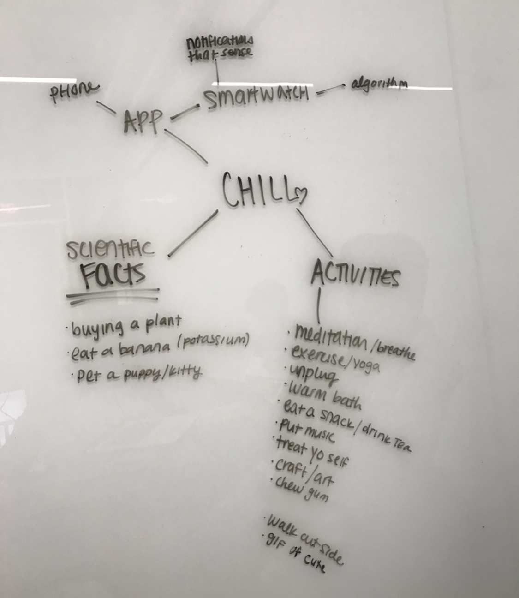

For this short-term project, our instructions were to prevent or encourage people from doing certain tasks through a physical or digital space. We decided to focus on turning negative aspects of people’s daily life into beneficial tasks by coercion. With this, we found that modern lifestyles are getting more fast-paced than ever and statistics on adult anxiety / stress are on the rise, people often forget to stop and take a break from their busy lives.
We started off exploring our own daily lives on what we interact with, what was being used to coerce/deter us, as well as things that bother us in our everyday lives. After compiling our findings, we found that we both deal with the stress caused by school, projects, our job, etc.
Our goal for branding was to use colors that showed calmness, so we landed on the main color being a cool blue, supplemented by other cool toned colors. Since this app would be utilized by monitoring your heart rate via smartwatch, we thought that making a heart logo would be a perfect fit. The colors fading into one another in the logo speaks to the fact that this application is something that can seamlessly be configured into a person’s busy life.
Since our project’s duration was only 2 weeks, we had to prioritize our times by spreading out the visual workload between us and spending less time on the UX research aspect of it. Even though this was the case, I wish we had spent more time researching on the heart of this project, intertwining user experience to the reduction of anxiety and daily life stresses.
Since this was only a concept project, there wasn’t a way to user test this smartwatch paired application, especially since we both did not own smartwatches. Another thing I wish we had done differently was to somehow get our hands on a smartwatch and ask owners of smartwatches how they usually interact with it on a daily basis, and incorporate that into part of our research.